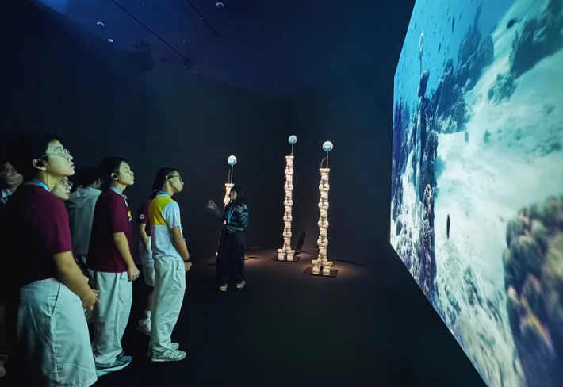
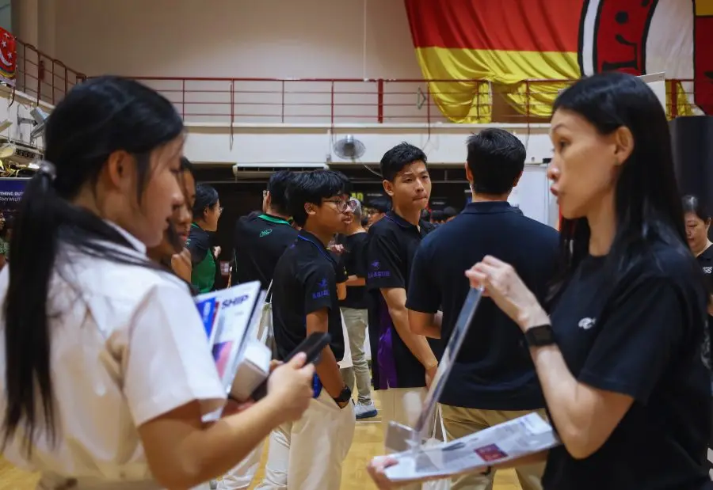
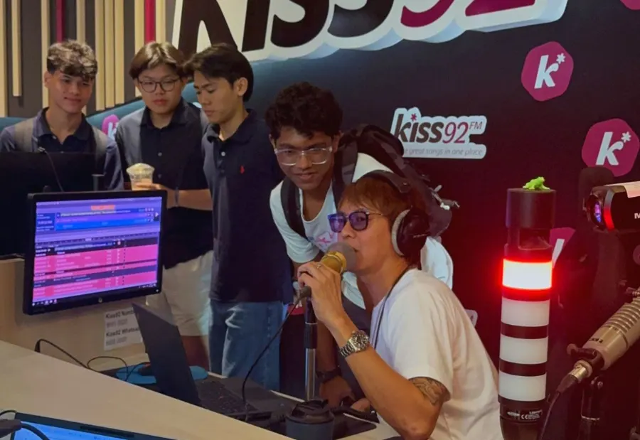

Events & programmes
Visits, fairs, panels and mentoring that show you the world of work before you choose.


Year-long
Learning Journeys
Real-world visits that help you understand yourself and make informed decisions about your future.
Open
August
EdVantage! Fair
Talks and partner booths to explore fields of study, careers and scholarships.
Open
October
University Panel Discussion
Local universities on admissions and pathways, with Q&A and booths. Parents welcome.
Open
November to December
JC1 Work Shadowing
Workplace visits and time with professionals, to test your interests first-hand.
Open
By selection
Project EdVantage
VJC's own talent development programme.
Open